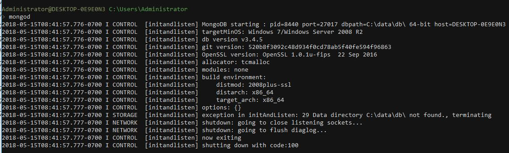
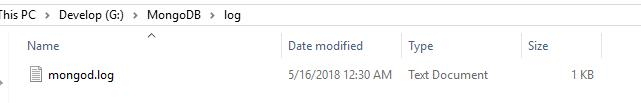
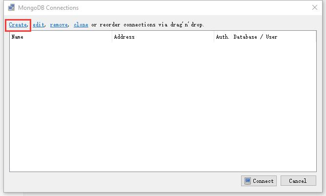
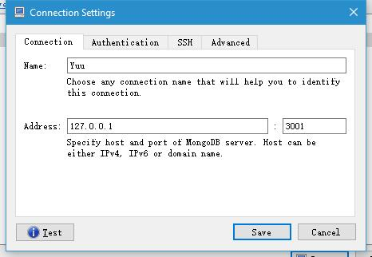
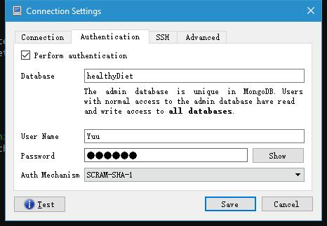
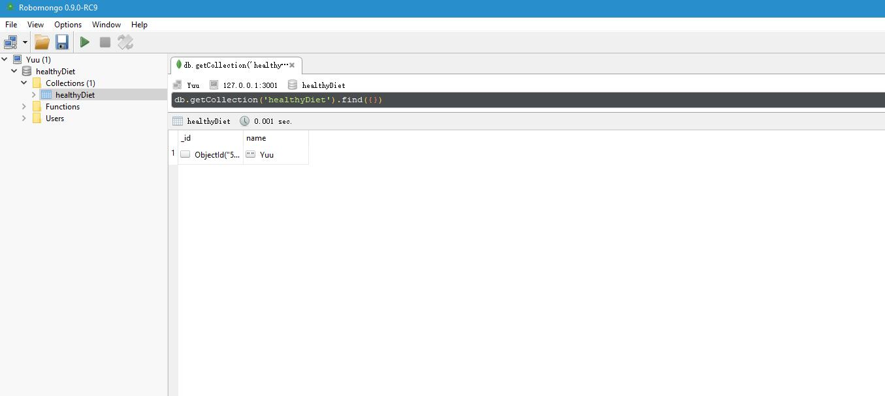

MongoDB-数据库
安装MongoDB
下载MongoDB安装文件，这里给出一个下载地址http://dl.mongodb.org/dl/win32/x86_64 ， 可以从其中选择需要的版本，以我的为例：mongodb-win32-x86_64-2008plus-ssl-3.4.5-signed.msi。下载完成后之后，双击执行安装，安装过程不再描述。
安装完成之后可以在安装目录找到，我的安装目录“C:\Program Files\MongoDB\Server\3.4\bin”，为了方便在命令行执行 mongod 、mongo , 将这个路径添加到系统环境变量。
在计算机-属性-高级系统设置-环境变量，找到path，双击编辑，在里面添加上面的安装目录，添加完成后可以在命令行执行：
mongod

证明我们的环境变量添加成功。
设置数据库
指定数据库位置
在系统磁盘新建数据库存放文件夹，以本机为例：G:\MongoDB，G:\MongoDB\db ，G:\MongoDB\log。
打开命令面板（快捷键win+r输入cmd回车），注意，需要命令以管理员身份在命令行执行：
mongod --bind_ip 127.0.0.1 --logpath "G:\MongoDB\log\mongod.log" --logappend --dbpath "G:\MongoDB\db" --port 3001 --serviceName "koa-learning" --serviceDisplayName "koa-learning" --install
上面的命令实际上是对MongoDB数据库进行了设置：
- bind_ip绑定了IP地址，这里的127.0.0.1是指只有本机可以访问。
- logpath指定了MongoDB的日志记录文件的位置。
- logappend指定日志的记录形式为追加形式。
- dbpath则指定了数据库的位置（注意，这不是我们安装MongoDB的位置，而是指我们真正存放数据文档的位置）。
- port指定了我们的数据库跑在哪个端口，以本机的例子则是跑在3001端口。
- 而后面的--serviceName "koa-learning" --serviceDisplayName "koa-learning" --install是将我们的这个命令安装成Windows的服务，注意做可以在我们启动Windows系统的时候就启动这个服务，当然我们可以选择去掉这一段，那么我们以后需要启动服务器都要执行
mongod --bind_ip 127.0.0.1 --logpath "G:\MongoDB\log\mongod.log" --logappend --dbpath "G:\MongoDB\db" --port 3001
使用配置文件
我们为了方便，并且有效可靠的记住服务器的配置，可以写一个配置文件，我们新建一个G:\MongoDB\mongod.cfg 文件，内容为：
systemLog:
destination: file
path: "G:\\MongoDB\\log\\mongod.log"
logAppend: true
net:
bindIp: 127.0.0.1
port: 3001
storage:
dbPath: "G:\\MongoDB\\db"
接下来执行：
mongod --config "G:\MongoDB\mongod.cfg" --serviceName "koa-learning" --serviceDisplayName "koa-learning" --install
这样我们就对数据库进行了设置，并且安装到了Windows的service，实际效果是和上面介绍的方式是一样的。
踩坑问题处理
如果发生如下问题：
Error parsing YAML config file: YAML-cpp: error at line 2, column 13 : illegal map value
可以使用使用空格代替tab，在“:”之后也使用一个空格
YAML doesn't really satisfy with tabs, then, use space instead before destination and storage. Don't forget to add a space after every ":" even in the lines systemLog and storage Finally, use quotes to enclose your pathes and double backslashes in these pathes.
查看数据库配置是否成功
执行上面的成功之后，我们可以看到log目录下面生成了一个log文件

打开这个log文件看到如下内容
2018-05-15T09:30:29.578-0700 I CONTROL [main] Trying to install Windows service 'koa-learning'
2018-05-15T09:30:29.580-0700 I CONTROL [main] Service 'koa-learning' (koa-learning) installed with command line '"C:\Program Files\MongoDB\Server\3.4\bin\mongod.exe" --bind_ip 127.0.0.1 --logpath G:\MongoDB\log\mongod.log --logappend --dbpath G:\MongoDB\db --port 3001 --service'
2018-05-15T09:30:29.580-0700 I CONTROL [main] Service can be started from the command line with 'net start koa-learning'
上面的log中说明可以通过net start koa-learning启动服务器，我们来试试，以管理员身份在命令行执行：
net start koa-learning

出现如图的结果，表示数据库已经启动，我们看到 G:\MongoDB\db 目录下多了一些文件，这些文件就是我们的数据库生成的。

将 net start koa-learning 添加到 package.json 中，以后执行 npm run db 即可启动服务器：
……
"scripts": {
"start": "node app.js",
"db": "net start koa-learning"
},
……
在命令行连接数据库
新开一个命令行，执行以下命令即可连接到数据库：
mongo mongodb://127.0.0.1:3001
// 或者
mongo -port 3001

我们看到数据库是没有访问控制的，数据库的读写权限不受控制的。关于 MongoDB 访问权限的设置这里有 详细介绍 ，接下来便开始介绍。
MongoDB的用户创建更新及删除
前面提到，我们的数据库是没有访问控制的，因此这里我们来创建权限和用户。
Enabling access control on a MongoDB deployment enforces authentication, requiring users to identify themselves. When accessing a MongoDB deployment that has access control enabled, users can only perform actions as determined by their roles.
> > > >
关于 admin 数据库 补充
在admin数据库创建管理员
要使用访问控制，我们先确保有一个超级用户，这个用户在admin 数据库里面创建，并且拥有 userAdmin 或者userAdminAnyDatabase 的权限，整改超级用户可以创建用户、授权或者删除用户权限、自定义的权限。
在前面的介绍中我们启动的数据库是没有开启访问控制的，不过即使这样，我们也可以在启动授权控制之前就创建超级用户，因为MongoDB提供了一个 localhost exception 来创建超级用户搭到 admin 数据库。
一旦超级用户被创建了，我们需要验证登录这个用户来创建更多用户，下面来看具体操作。
如果是紧接前面的操作，我们是已经通过非授权的方式启动并且已经连接到数据库的, 接下来就是创建超级用户:
> use admin
switched to db admin
上面的这个命令use admin，能够切换到admin数据库，执行成功之后，我们就可以在admin数据库进行操作了。
那么首先来创建一个管理员用户，这个用户具有创建管理其他用户的权限：
> db.createUser(
... {
... user: "admin",
... pwd: "admin",
... roles: [ { role: "userAdminAnyDatabase", db: "admin" } ]
... }
... )
Successfully added user: {
"user" : "admin",
"roles" : [
{
"role" : "userAdminAnyDatabase",
"db" : "admin"
}
]
}
上面的命令的点点点我们可以理解为换行，如果在一些命令行面板里面不能数据换行，可以复制上面的命令，把换行删掉，整理成一行来执行。如：
db.createUser( { user: "admin",pwd: "admin", roles: [ { role: "userAdminAnyDatabase", db: "admin" } ]} )
这其中需要注意的是user指的是我们的用户名，pwd是密码，而roles里面配置的正是这个用户的权限了。userAdminAnyDatabase就是一个具有在其他数据库增删和管理用户的权限，db指定了创建的这个管理员用户所在的数据库是在admin。
注意：超级用户可以访问所有数据库，这个用户是被创建在 admin 管理数据库，db 指定数据库。
访问控制方式启动数据库
既然之前的启动数据库的方式并不是访问控制的，我们删掉之前安装的 Windows service , 以管理员身份执行 sc delete koa-learning ：
$ sc delete koa-learning
[SC] DeleteService SUCCESS
接着启用权限控制，执行下面的命令，执行之前确保系统MongoDB进程关闭，这里使用的 --auth 是用来开启授权启动：
mongod --config "G:\MongoDB\mongod.cfg" --serviceName "koa-learning" --serviceDisplayName "koa-learning" --auth --install
net start koa-learning
可以看到这种启动方式比之前多了一个--auth。
在对应数据库创建用户
既然超级用户已经被我们创建好了，这个超级用户是在admin数据库，那么我们先连接数据库：
mongo -port 3001
我们先不登录这个超级用户，而且切换到一个数据库healthyDiet， 执行 use healthyDiet 使用 healthyDiet 数据库。我们可以执行 db 查看当前的数据库。先来插入一条数据试试：
> db.healthyDiet.insert({name:'Yuu'})

我们看到“not authorized on healthyDiet to execute command” ，这就是说, 我们没有权限操作。
不能插入数据正是我们想要的结果，但是为了能够在这个数据库插入数据，我们就需要去创建有权限的用户了，
因此我们切换到admin数据库去登录账号：
> use admin
switched to db admin
> db
admin
> db.auth("admin", "admin")
1 // 返回1 授权成功, 否则返回0, 并提示失败
上面的命令执行完毕之后，我们就算是真正的登录数据库了。
先来看看怎么创建用户：
使用 db.createUser() 添加用户，以及用户的 内置权限 或 用户定义权限 。
我们上面创建的 admin 用户只能 管理用户和权限，如果要执行其它操作，如从数据库中查询数据，MongoDB 会返回错误。
下面我们来为 healthyDiet 创建一个有 读写权限 的用户：
// 执行
> use healthyDiet
// 结果
switched to db healthyDiet
// 执行
> db.createUser(
... {
... user: "Yuu",
... pwd: "123456",
... roles: [ { role: "readWrite", db: "healthyDiet" } ]
... }
... )
// 结果
Successfully added user: {
"user" : "Yuu",
"roles" : [
{
"role" : "readWrite",
"db" : "healthyDiet"
}
]
}
上面的示例中，我们切换到 healthyDiet 上创建用户， 因为只有在这里创建的用户才是这个数据库的用户， 才能在这里完成授权。
但是需要注意的是，我们刚刚创建的这个用户的信息是存放在 admin 库中的，为了验证，我们接着换到 admin 库，看一下刚刚创建的用户，首先切换到admin数据库肯定要先 use admin ，接着执行下面的命令查找用户：
> db.system.users.find({user:'Yuu'})
{ "_id" : "healthyDiet.Yuu", "user" : "Yuu", "db" : "healthyDiet", "credentials" : { "SCRAM-SHA-1" : { "iterationCount" : 10000, "salt" : "sd/AMDmlYvPnYjWWdabk6A==", "storedKey" : "zBQcQxRNSp8E3h0SdPcMrfFhDAE=", "serverKey" : "WaFuxva6hsmn1NkMBFjFltO9hWk=" } }, "roles" : [ { "role" : "readWrite", "db" : "healthyDiet" } ] }
使用创建的用户来新增数据
我们现在用新增的用户来连接数据库，为了演示不同的方式启动和连接数据库，我们使用下面的命令，是在连接数据库时就进行验证，和上面的admin用户登录的方式一样，上面的方式是先连接数据库再验证：
mongo --port 3001 -u Yuu -p 123456 --authenticationDatabase healthyDiet

既然已经验证成功，我们就可以尝试着来写入数据了，首先还是要切换到healthyDiet数据库，我们的用户是在这个数据库创建的，接着我们来执行插入数据。
> use healthyDiet
switched to db healthyDiet
> db.healthyDiet.insert({name:'Yuu'})
WriteResult({ "nInserted" : 1 })
OK！
注意：登录一个用户的时候，要切换到该数据库
参数说明
| 参数 | 描述 |
|---|---|
| --bind_ip | 绑定服务IP，若绑定127.0.0.1，则只能本机访问，不指定默认本地所有IP |
| --logpath | 定MongoDB日志文件，注意是指定文件不是目录 |
| --logappend | 使用追加的方式写日志 |
| --dbpath | 指定数据库路径 |
| --port | 指定服务端口号，默认端口27017 |
| --serviceName | 指定服务名称 |
| --serviceDisplayName | 指定服务名称，有多个mongodb服务时执行。 |
| --install | 指定作为一个Windows服务安装。 |
权限说明
| 分类 | role(角色) | 简要说明 |
|---|---|---|
| 数据库用户角色(DB User Roles) | read readWrite |
为某个数据库创建一个用户, 分配该数据库的读写权力 |
| 数据库管理员角色(DB Admin Roles) | dbAdmin dbOwner userAdmin |
拥有创建数据库, 和创建用户的权力 |
| 集群管理角色(Culster Administration Roles) | clusterAdmin clusterManager clusterMonitor hostManager |
管理员组, 针对整个系统进行管理 |
| 备份还原角色(Backup and Restoration Roles) | backup restore |
备份数据库, 还原数据库 |
| 所有数据库角色(All-Database Roles) | readAnyDatabase readWriteAnyDatabase``userAdminAnyDatabase``dbAdminAnyDatabase |
拥有对admin操作的权限 |
| Superuser Roles(超级管理员) | root |
dbOwner userAdmin userAdminAnyDatabase这几个角色角色提供了任何数据任何用户的任何权限的能力，拥有这个角色的用户可以在任何数据库上定义它们自己的权限 |
修改用户角色
更新用户
>db.updateUser([用户名],{用户对象, 与创建时一样}) //其实后面还有一个可选参数writeConcern, 一般不写
创建用户时和更新用户都需要属性user pwd roles成功修改后没有任何提示. 如下:
//修改密码并且修改角色为只读
> db.updateUser('test',{user:'test',pwd:'admin',roles:[{role:'read',db:'testDB'}]})
>
以上需要注意的就是, roles数组里的对象数据role db两个都需要给出, 否则会出现错误
删除用户
> use testDB
switched to db testDB
> db.dropUser('test')
true
>
总结
- 一定切换到对应的数据库去创建用户， 否则在进行认证的时候, 会提示找不到用户。
- 一定要到对应的数据库上去认证用户，否则会认证授权失败。
- 不是所有人都能操作admin数据库， 分配给用户权限的时候，一定要谨慎。
- 修改用户和删除用户都和创建用户一样，需要切换到数据库管理员的身份。也就是需要先切换到
admin库完成认证才能进行后面的操作，同样需要到对应数据库去操作用户， 因为用户是跟着库走的。
可视化
我们也可以下载 Robomongo 来进行可视化的操作，下载安装这里不做描述。
打开Robo之后，新增一个连接，

输入连接名称，地址和端口，

并且切换到用户验证栏输入验证信息，点击保存，

然后连接，我们就可以看到healthyDiet数据库了。

参考资料：
https://docs.mongodb.com/master/tutorial/enable-authentication/